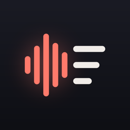

MemoLog
Voice recorder with transcription on your phone, in 99 languages. Free, with one optional unlock. No ads, no subscription, no account.
Support
Questions, bugs, or feature requests: email contact@eastframe-technology.com. A human reads every message, usually the same day.
A short captioned walkthrough shows every feature.
Frequently asked
Is my audio sent anywhere to be transcribed? No. MemoLog transcribes with a speech model that is built into the app and runs on your phone. It works in airplane mode, and nothing leaves your device unless you share it.
Which languages are supported? 99 languages. MemoLog detects the language by itself, or you can pick one in Settings for better results on short or mixed recordings.
How accurate is it? Clear speech close to the phone transcribes very well; noisy rooms, distant voices and heavy accents make more mistakes. Tap any sentence to hear the audio behind it.
What if the app is closed or the battery dies while recording? MemoLog writes the audio as it records. The next time you open it, an interrupted recording is repaired and listed, up to the last second that was saved.
What does the free version include? Unlimited recording and playback, sharing audio, and the first 5 minutes of every transcript. MemoLog Pro, a single purchase, transcribes recordings of any length, imports audio files (for example from Voice Memos) to transcribe them, exports transcripts as text or subtitles (SRT), and shares audio as compact M4A.
Is there a subscription? No. MemoLog Pro is a single purchase. Restore it on a new phone from Settings.
How do I move my recordings to a computer? Share them from the recording screen, or on iPhone open the Files app (On My iPhone, MemoLog).
Privacy policy
Effective 2 November 2026. MemoLog is published by Eastframe Technology LLC.
What we collect: nothing. MemoLog has no account system, no analytics, no advertising, and no crash reporting service. It never connects to the internet and sends no data to us or anyone else.
Microphone. MemoLog uses the microphone only while you record. Recordings are saved on your device.
Recordings and transcripts stay on your device until you delete them or uninstall the app. Transcription runs on your device with a built-in speech model. If you share or export a recording or a transcript, it goes to the app or service you choose in the share sheet.
Purchases are handled by the App Store or Google Play. We do not see your payment details.
Third parties. The app contains no third-party advertising or analytics code. The only external page it opens is this one, and only when you tap it.
Children. MemoLog is not directed at children and collects no personal information from anyone.
Changes. A new version of this policy will be published at this address with a new effective date.
Credits
Speech recognition by whisper.cpp (MIT licence) with OpenAI's Whisper base model (MIT licence). Store pictures use public-domain recordings from LibriVox and a public-domain 1962 speech by John F. Kennedy.